Aerospace Engineering transfer student with practical hands-on experience in SolidWorks 3D CAD, OpenRocket flight simulation, Bambu Lab 3D printing, and Python automation. Currently designing and prototyping a custom scratch-built sounding rocket while working as a Technical Assistant at Mobile Hearing Solutions and preparing to transfer to Arizona State University.
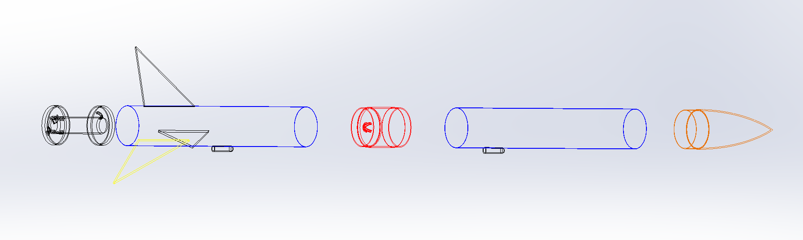
After flying commercial Estes model rocket kits and losing them to excessive parachute drift and wadding ignition, I embarked on designing, simulating, and fabricating a custom mid-power vehicle from scratch. This project is actively in progress: vehicle geometry and stability have been simulated in OpenRocket, custom components are modeled in SolidWorks and printed on my Bambu Lab A1, and a custom Raspberry Pi Pico telemetry payload is currently undergoing bench testing. The custom vehicle has not yet flown; it is being prepared for a sanctioned rocketry club launch in the Arizona desert.
Before committing to custom fabrication, I flew commercial Estes kits (Alpha 3 and Hi-Flier) to gather field operations experience. The failure modes observed across these flights—excessive wind drift under parachutes, ejection charge wadding burn-through, and launch rod exit dynamics—directly dictated the engineering requirements for the custom scratch-built vehicle.
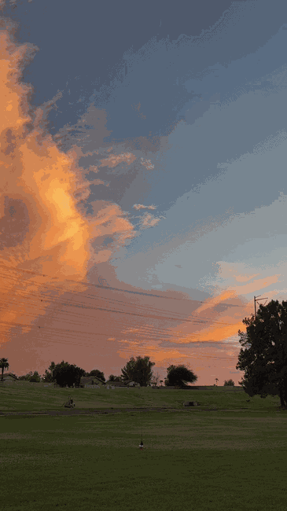
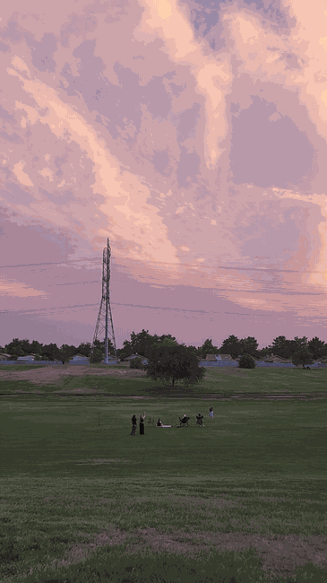
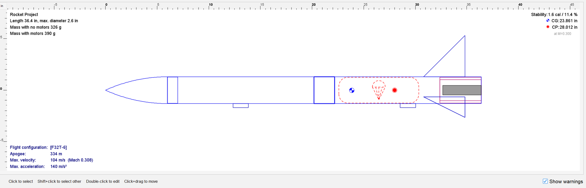
The custom sounding rocket integrates multi-material 3D printing, numerical trajectory simulation, and an onboard RP2040 telemetry payload.
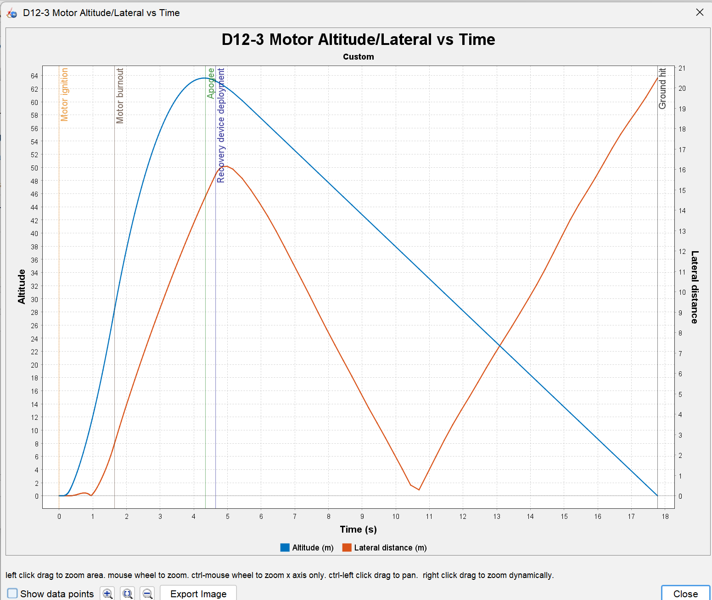
Redesigned the fins after initial simulations showed marginal stability, moving the center of pressure aft and improving the static margin from 0.745 to 1.49 calibers. Sized a 24" parachute for a controlled 5.76 m/s desert touchdown speed.
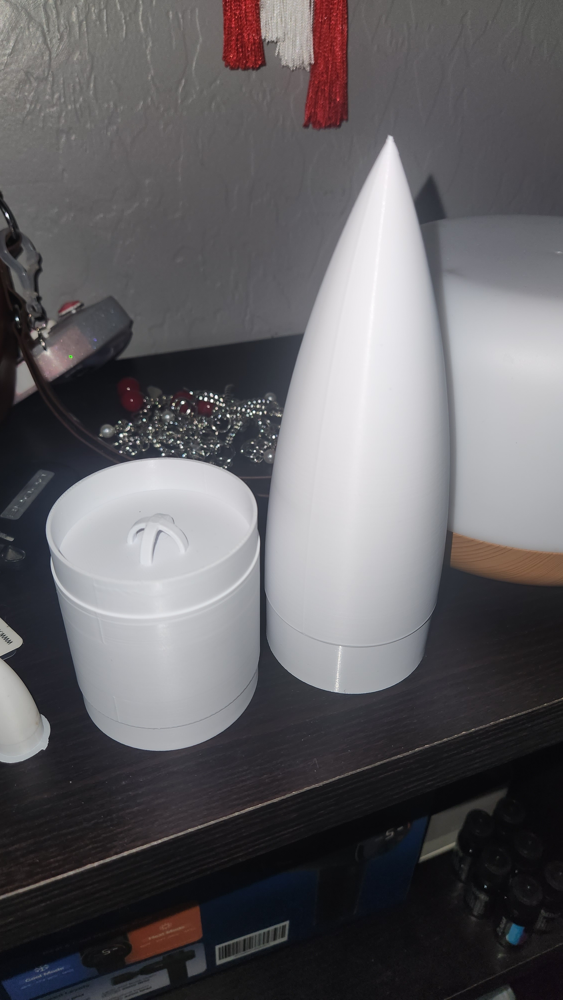
Exported SolidWorks models as STEP files into Bambu Studio and printed the aerodynamic components with smooth curved surfaces. Printed the full-scale Ogive Nose Cone and Payload Carrier in eSUN PLA+ with gyroid infill. Motor mount brackets are scheduled to be printed in heat-resistant Polymaker PETG.
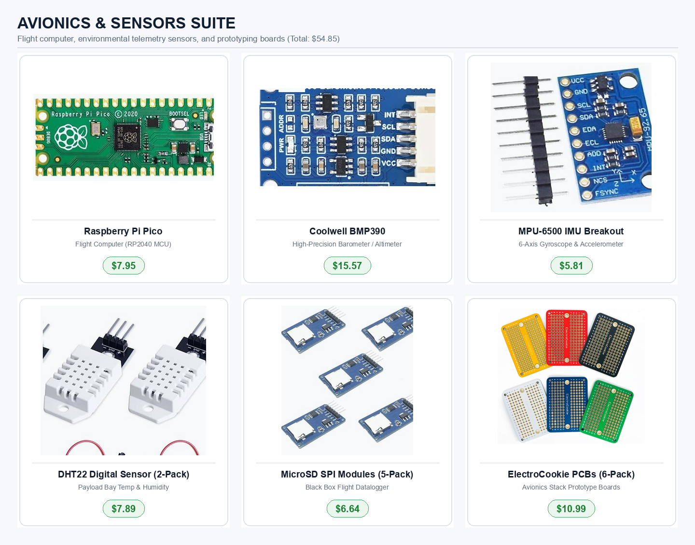
Developing an onboard telemetry package based on the Raspberry Pi Pico (RP2040). Integrates a BMP390 precision barometer for altitude logging, an MPU-6500 6-axis IMU for acceleration and tilt, and an SPI MicroSD module to record high-frequency flight telemetry to flash memory.
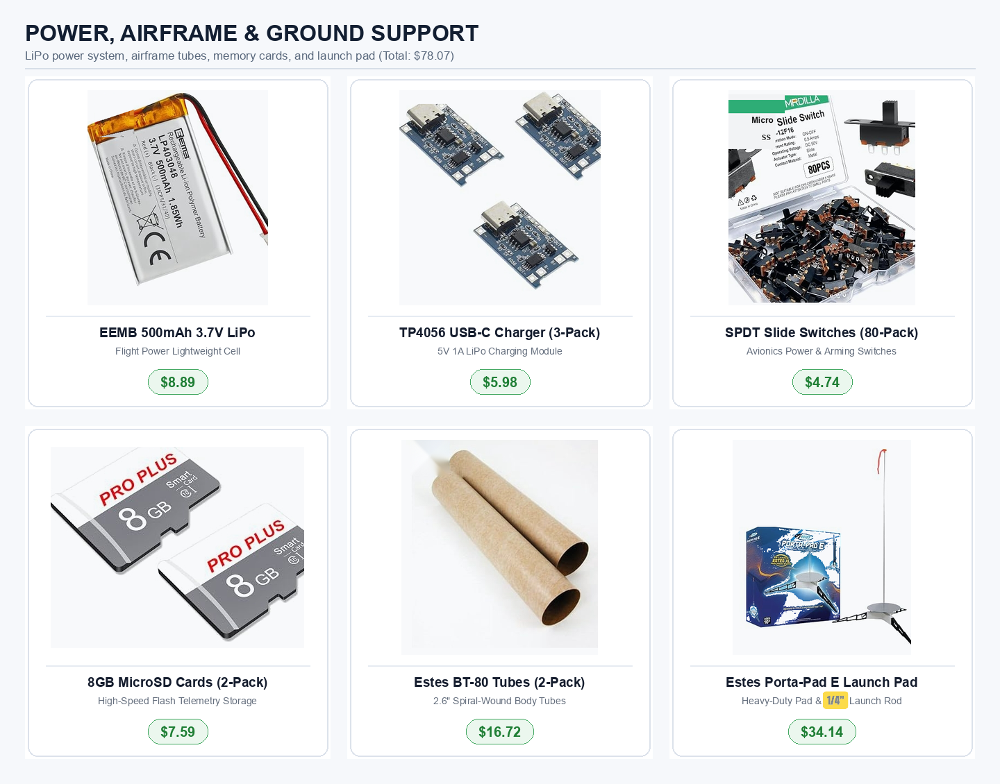
To permanently prevent wadding burn-through experienced on Estes flights, designed a piston recovery mechanism. A Nomex piston pushes the 24" parachute out of the recovery tube while protecting the electronics from hot motor gases.
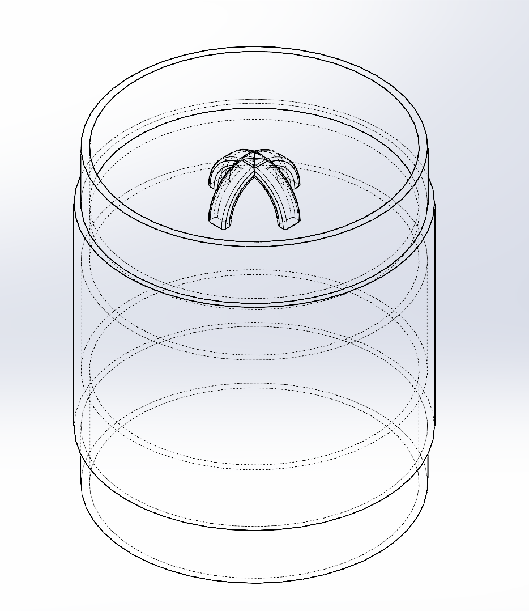
Modeled the central airframe payload carrier in SolidWorks. Rather than relying on separate couplers, integrated forward and aft shoulders directly into the printed body. Designed a 4-Legged Shock Cord Anchor across the bulkhead to distribute parachute opening shock evenly into solid perimeter walls.
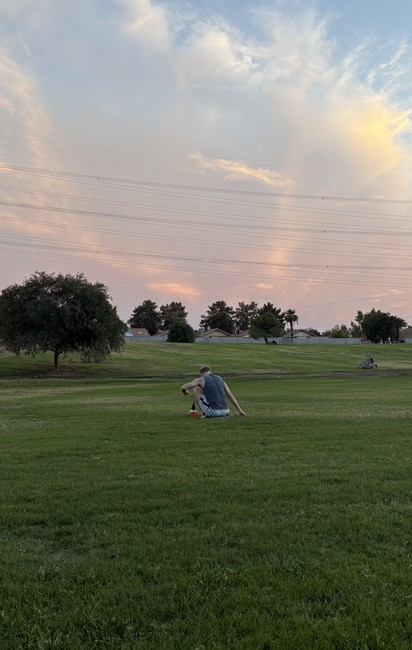
Gained practical range operations experience through commercial Estes launches at Freestone and Crossroads Parks. Once final bench integration and ground deployment tests are complete, the vehicle will be flown at an NAR-sanctioned rocketry club launch in the Arizona desert.
Mechanical design course project (Grade A) emphasizing parametric 3D part modeling, dynamic rotational mates, clearance checking, and 2D ANSI manufacturing drawings.
Modeled 10 discrete mechanical parts from dimensioned paper sketches to a fully constrained, functional assembly: Front Grill, Back Grill with pattern cuts, Aerodynamic Fan Blades, Center Hub, Motor Housing, On/Off Knob, Shaft, Frame Ring, Vertical Stand, and Weighted Base.
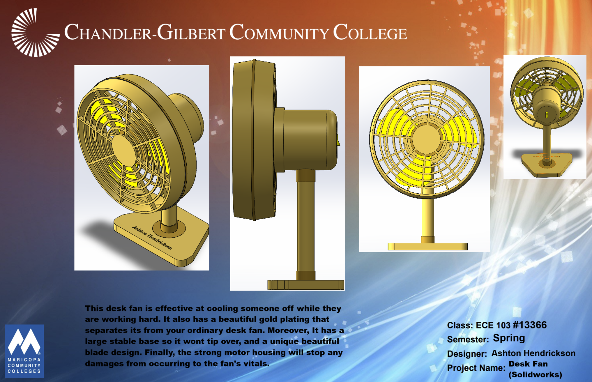
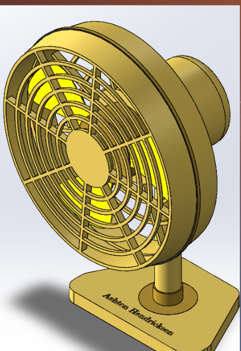
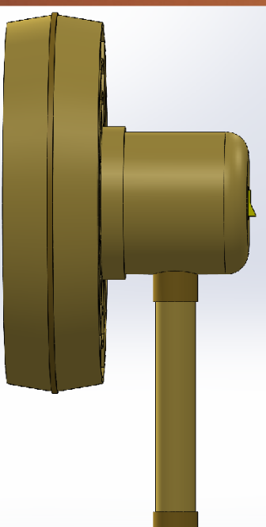
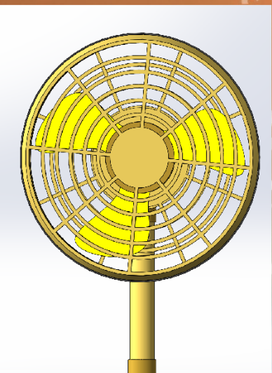
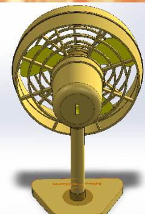
Engineering work spanning numerical MATLAB modeling, route-optimized scheduling algorithms for healthcare operations, and offline edge OCR.
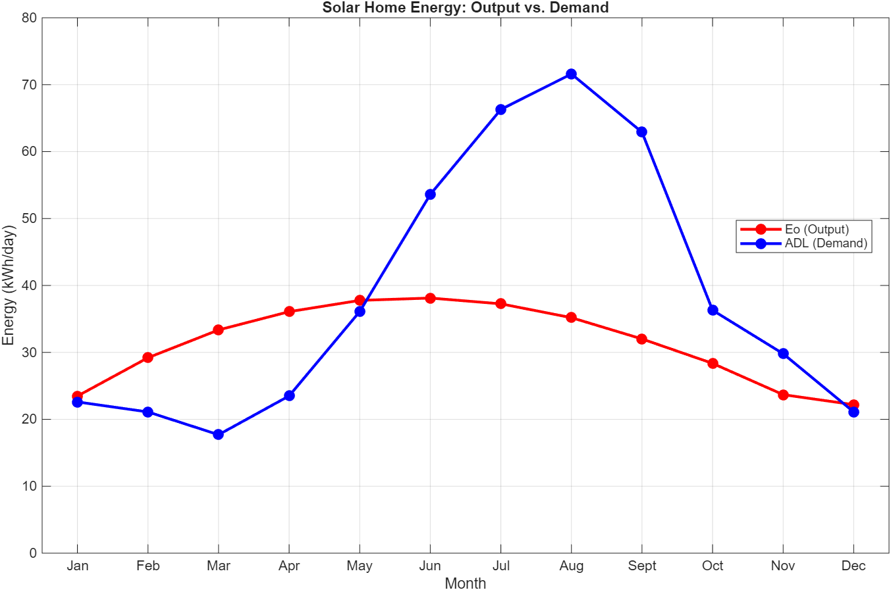
Lead mathematical modeler on a 5-person student engineering team sizing an off-grid residential solar and battery storage system for Chandler, Arizona. Formulated mathematical equations simulating seasonal solar angles and hourly residential load curves.
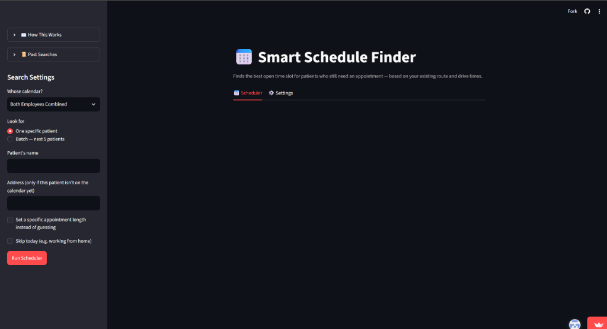
A production desktop application built in Python and Streamlit for Mobile Hearing Solutions to automate technician scheduling across the Phoenix metro area, selecting appointment openings that minimize vehicle drive time.
An automated document extraction pipeline developed at Mobile Hearing Solutions to convert incoming patient referral faxes into structured database records.
Completed an on-site job shadow with an Engineering Specialist at Able Aerospace (a Textron Aviation company). Observed how certified engineers review FAA airworthiness technical data, inspect flight-critical components, and support aerospace manufacturing, repair, and overhaul operations.
Shadowed an engineering specialist reviewing engineering change orders, confirming airworthiness data, and walking through the documentation process submitted to the FAA under Form 8110-3 for custom repairs and parts.
Toured the machine shop and observed multi-axis CNC milling of high-stress aircraft components including helicopter rotor hubs, transmission drive shafts, and landing gear parts.
Observed shot-peening equipment used to induce compressive stress and prevent fatigue cracking, electroplating lines, and how engineers use SolidWorks in-house to design custom inspection fixtures and water-testing tanks.
Core technical capabilities developed through community college engineering coursework, independent prototyping, and professional workplace tool development.